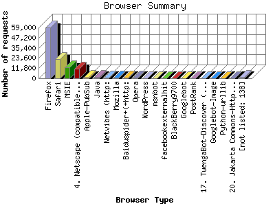

The Browser Summary identifies the most popular web browsers used to visit
this site.
Browsers are broken down by recognized categories such as
Netscape Navigator/Communicator, Microsoft Internet Explorer, WebTV, Opera
and the like. Within each category is also a subgroup by version number
such as 'MSIE 5.0' or 'Netscape 4.5'.
This report shows the first 20 results by number of requests. This report is sorted by number of requests.

| Browser Type | Number of requests | |
|---|---|---|
| 1. | Firefox | 58,841 |
| 2. | Safari | 22,436 |
| 3. | MSIE | 13,007 |
| 4. | Netscape (compatible) | 11,188 |
| 5. | Apple-PubSub | 1,816 |
| 6. | Java | 1,681 |
| 7. | Netvibes (http: | 1,023 |
| 8. | Mozilla | 911 |
| 9. | Baiduspider+(+http: | 500 |
| 10. | Opera | 411 |
| 11. | WordPress | 256 |
| 12. | msnbot | 247 |
| 13. | facebookexternalhit | 144 |
| 14. | BlackBerry9700 | 135 |
| 15. | Googlebot | 103 |
| 16. | PostRank | 80 |
| 17. | TwengaBot-Discover (http: | 78 |
| 18. | Googlebot-Image | 69 |
| 19. | Python-urllib | 64 |
| 20. | Jakarta Commons-HttpClient | 60 |
| [not listed: 138] | 1,443 | |
This report was generated on May 26, 2011 13:05.
Report time frame August 8, 2010 07:40 to May 25, 2011 23:40.
| Web statistics report produced by: analog 6.0 / Report Magic 2.21 |